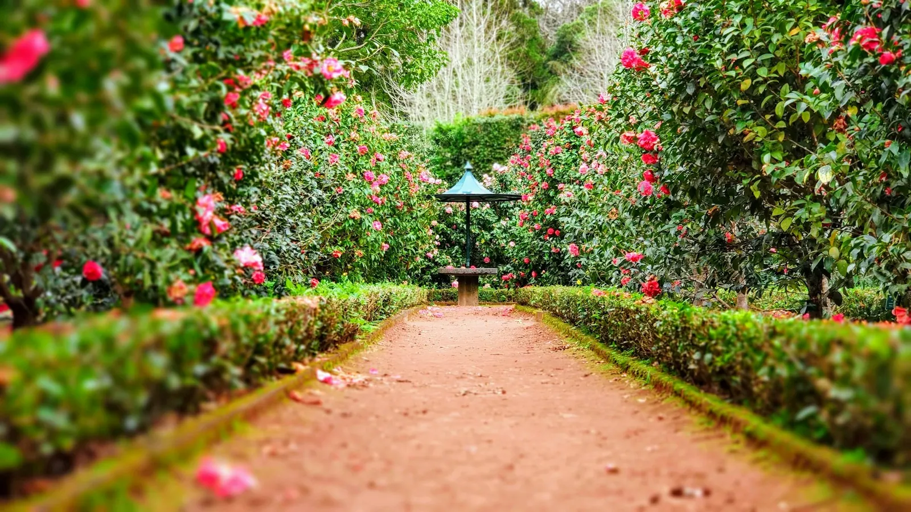
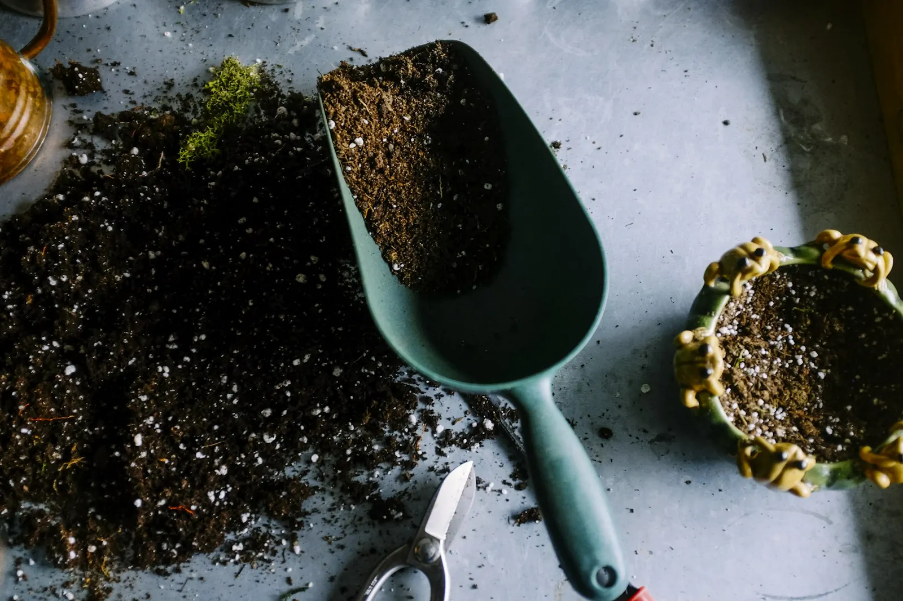

Tuinaanleg
Een tuin die je van nul opbouwt
Een nieuwbouw met alleen aarde rond het huis, of een tuin die al jaren anders moet. Paden, terras, gazon en beplanting, netjes op elkaar afgestemd zodat het ook over tien jaar nog klopt.
- Paden en terras
- Beplanting
- Nieuw gazon
- Afboording